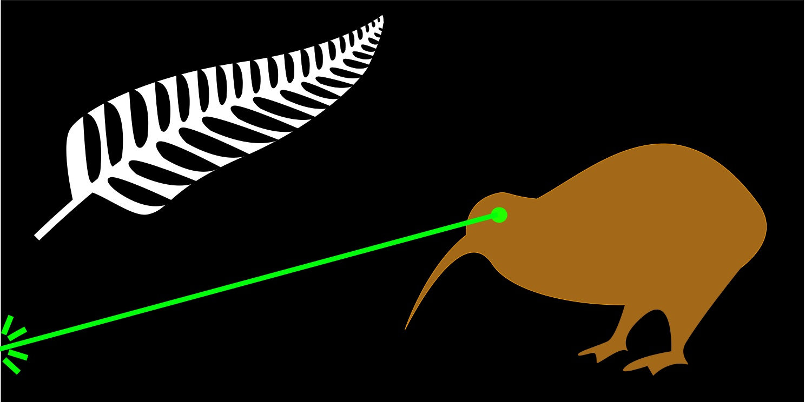
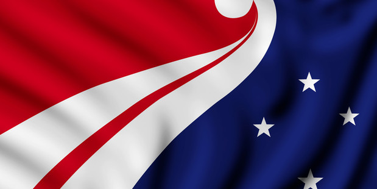

Jun 27, 2015
The world's flags are generic as hell. Certain countries have even for a time flown the same flag without realising. Are there really so few 'acceptable flags' that we need to double up? A quick look at what the professionals have come up shows us that our flags are anything but unique representations of our home countries.
New Zealand is in the middle of choosing a new flag. Our current one is derived from British occupation and frankly looks too much like the Australian one. Looking at the proposed replacements, it seems we are keen to trade in looking like the Aussies to looking like some other country. If we exclude the joke designs, the others are the same mash ups of colours seen everywhere else.
So what if we didn't exclude the joke ones?
There are many more joke proposals than serious ones and I think that says something about the character of the country these flags are trying to represent. My favourite is the instantly recognisable Laser Kiwi! There is not a flag in the world which could be confused with it.

This flag ironically makes me feel more national pride than any serious design ever could. What audacity to fly that flag on the world stage. See already how the Australians laugh at it. Now imagine that flag flying one place higher than theirs at the next world cup or Olympics. What a time to be alive!
A flag should make its citizens feel something. If that something is just a laugh, well what is wrong with that?! We could all benefit a great deal from laughing more. That is surely a far healthier response than remembering old battles and reflecting on the violent history from which the old flag was created.
New Zealand thrives on being the underdog. There is no other flag which could so boldly claim that title for ourselves.
I am not totally without my wits. It is clearly a joke and will never fly - as sad as that is. The actual design could be taken at least from MS Paint to Photoshop level but I like the spirit of it.
Also, both the USA and Great Briton flags do break the generic trend and are pretty nice.
If we do have to choose a 'serious flag', this one created by the talented Denise Fung of Christchurch is looking pretty good too.
